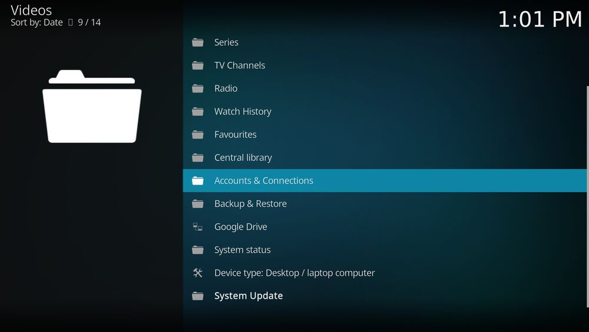
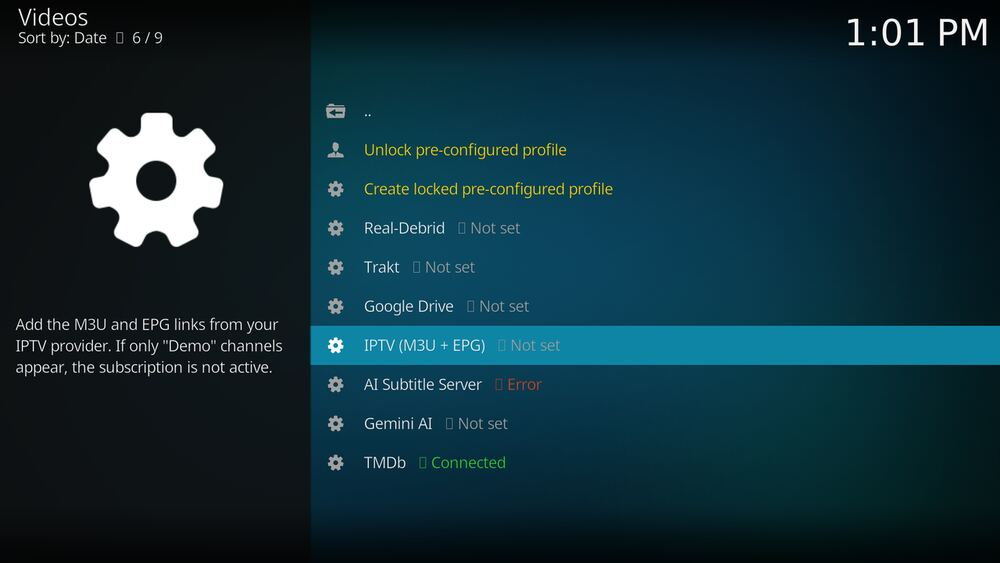
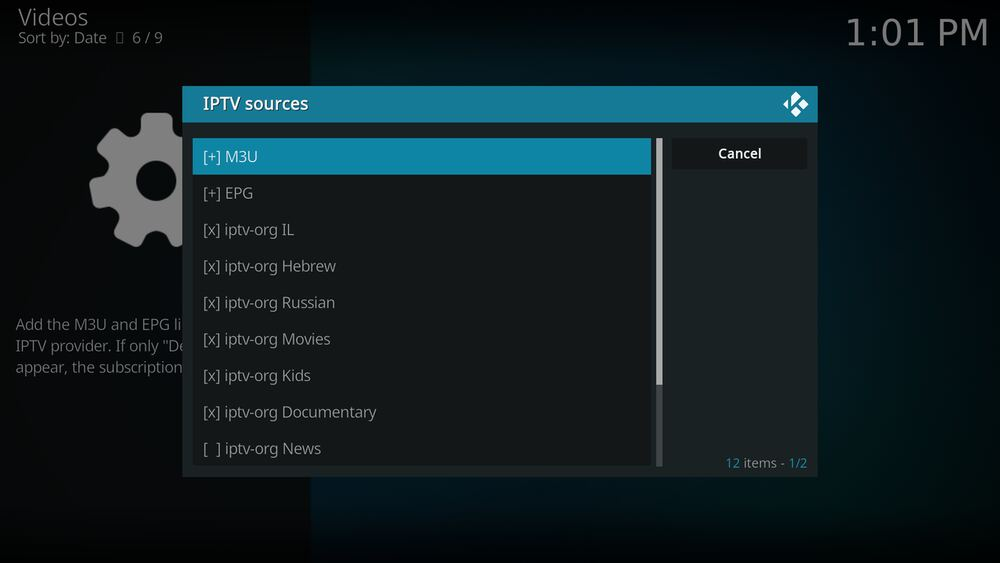
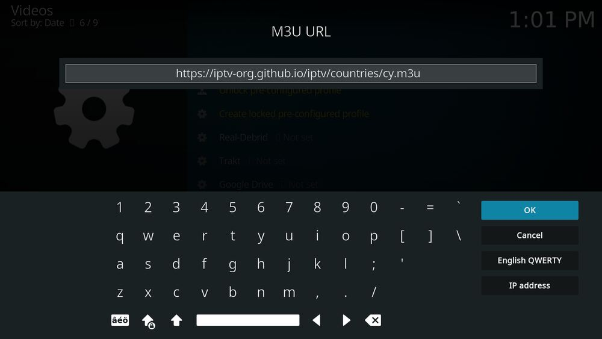
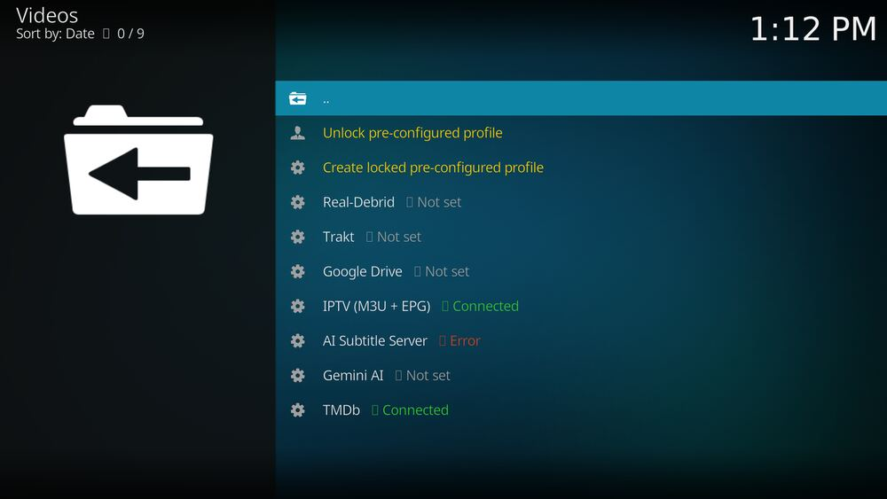
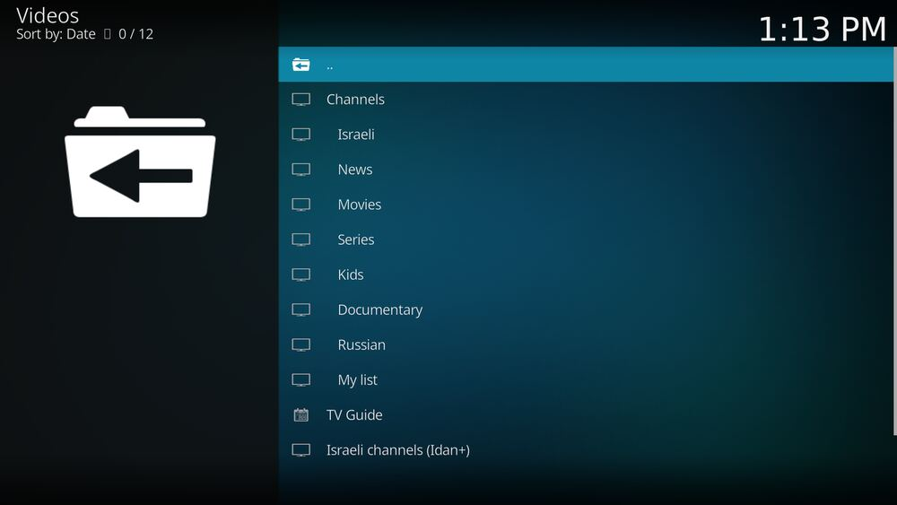
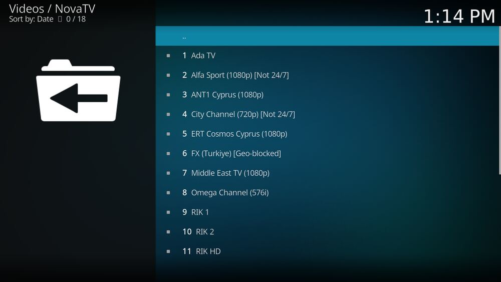
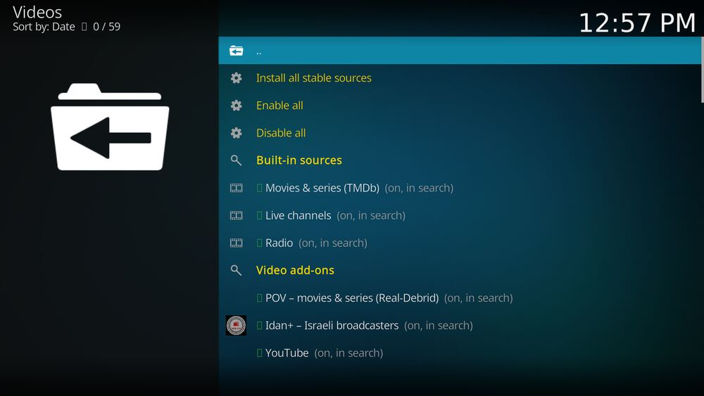
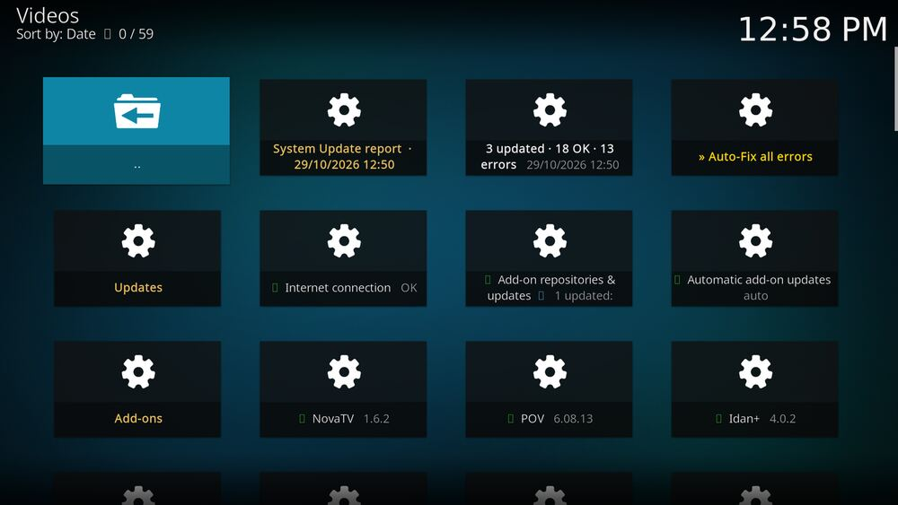

הוספת מקורות ל-NovaTV
מדריך צעד אחר צעד, עם צילומי מסך, לכל דרך להוסיף מקור תוכן להרחבה NovaTV ב-BN Stream. בסוף כל חלק יש בדיקה: אם כולה עוברת, הפעולה הצליחה. גרסה 1.6.3 · נבדק בפועל ב-29/10/2026.
1. איזה סוגי מקורות יש
| סוג מקור | איפה ב-NovaTV | אפשר לבד? | מתי מופיע |
|---|---|---|---|
| רשימת ערוצים (M3U) של ספק IPTV או של רשת | חשבונות וחיבורים ← IPTV | כן, מהשלט | מיד ברשימה; בטלוויזיה תוך שעה, או מיד אחרי הפעלה מחדש של Kodi |
| מדריך שידורים (EPG) | חשבונות וחיבורים ← IPTV | כן, מהשלט | אחרי בניית המדריך (עד כמה דקות) |
| רשימות ערוצים חינמיות מובנות | חשבונות וחיבורים ← IPTV | כן, מהשלט | כמו M3U |
| מקורות לחיפוש (TMDb, ערוצים, רדיו, הרחבות) | הגדרות ← מקורות, או מסך המקורות | כן, מהשלט | בחיפוש הבא |
| תחנת רדיו | radio-browser.info (מאגר פתוח) | כן, מהדפדפן | אחרי שהמאגר מאשר (בדרך כלל יום) |
| הרחבת וידאו חדשה מהמאגר הרשמי של Kodi | קוד: providers.py | במחשב, עם עריכת קובץ | בגרסה הבאה שמשחררים |
2. הוספת רשימת ערוצים משלך (M3U)
צריך: הקישור לרשימה, שמתחיל ב-http ונגמר בדרך כלל ב-.m3u או .m3u8. לדוגמה, כדי לנסות: הרשימה הציבורית של ערוצי קפריסין:
https://iptv-org.github.io/iptv/countries/cy.m3u
- פותחים את NovaTV ונכנסים ל-חשבונות וחיבורים.

התפריט הראשי. השורה חשבונות וחיבורים (Accounts & Connections). - יורדים לשורה IPTV (M3U + EPG) ולוחצים OK. בצד מופיע הסבר קצר.

לפני ההוספה המצב הוא לא מוגדר (Not set). - נפתח חלון מקורות IPTV. בוחרים [+] M3U.

למטה ברשימה: רשימות הערוצים החינמיות, עם [x] ליד כל רשימה פעילה. עליהן בחלק 4. - מקלידים את הקישור (בשלט, או במקלדת מחוברת) ולוחצים OK.

מקלידים בדיוק כמו שהספק נתן, כולל https://. - מופיע שדה Name, שם לרשימה (למשל "הספק שלי"). מאשרים.
- חוזרים לחלון מקורות IPTV, ובו שורה חדשה
M3U: השם שנתתם. יורדים עד הסוף ובוחרים [x] אישור. NovaTV מוריד את הרשימה ובונה את רשימת הערוצים מחדש (כמה שניות עד דקה).
- במסך חשבונות וחיבורים, ליד IPTV כתוב ● מחובר בירוק (Connected).

- ב-טלוויזיה מופיעה קבוצה חדשה הרשימה שלי (My list). היא מופיעה תוך שעה, או מיד אחרי סגירה ופתיחה של Kodi.

- בתוך הרשימה שלי מופיעים הערוצים מהרשימה (בבדיקה: 18 ערוצי קפריסין), וערוץ שבוחרים מתחיל לנגן.

3. הוספת מדריך שידורים (EPG)
לערוצים החינמיים כבר יש מדריך מובנה. מדריך משלך צריך רק לרשימה של ספק, בדרך כלל עם קישור שהספק נתן, שנגמר ב-.xml או .xml.gz.
- חשבונות וחיבורים ← IPTV (M3U + EPG), בדיוק כמו בחלק 2.
- בוחרים [+] EPG, מקלידים את הקישור ומאשרים.
- בוחרים [x] אישור בסוף הרשימה.
- בחלון מקורות IPTV מופיעה שורה
EPG: הקישור. - אחרי כמה דקות: ב-טלוויזיה ← מדריך שידורים מופיעות תוכניות ליד הערוצים של הספק.
- ברשימת הערוצים מופיע ליד הערוץ שם התוכנית שמשודרת עכשיו.
4. הפעלה וכיבוי של רשימות הערוצים החינמיות
NovaTV כולל 9 רשימות חינמיות מ-iptv-org: ישראל, עברית, רוסית, סרטים, ילדים, תעודה, חדשות, מוזיקה ואנגלית. חדשות, מוזיקה ואנגלית כבויות בהתחלה.
- חשבונות וחיבורים ← IPTV (M3U + EPG).
- לוחצים על רשימה כדי להחליף מצב:
[x]= פעילה,[ ]= כבויה. - בוחרים [x] אישור בסוף.
5. הפעלה וכיבוי של מקורות החיפוש
- שתי דרכים: בהגדרות של NovaTV ← קטגוריה מקורות ← השורה הראשונה, או בתפריט הראשי ← הספרייה המרכזית ← מקורות ותוספים.
- במסך יש שתי קבוצות: מקורות מובנים (סרטים וסדרות מ-TMDb, ערוצים חיים, רדיו) ו-תוספי וידאו. נקודה ירוקה = כלול בחיפוש, אפורה = מתעלמים ממנו.

לחיצה על שורה מחליפה את המצב. למעלה יש גם הפעל הכל / כבה הכל. - הפעלה של תוסף שלא מותקן מתקינה אותו מיד מהמאגר הרשמי של Kodi.
- הנקודה ליד המקור שינתה צבע, והסוגריים מראים
(פעיל, ...)או(כבוי, ...). - בחיפוש הבא (למשל "Dune") מקור כבוי לא מופיע בכותרות התוצאות, ומקור פעיל מופיע אם יש לו תוצאות.
6. הוספת תחנת רדיו
הרדיו ב-NovaTV מגיע מ-radio-browser.info, מאגר פתוח שכל אחד יכול להוסיף אליו תחנה.
- בדפדפן: radio-browser.info/add.
- ממלאים שם, קישור לזרם (עדיף שמתחיל ב-
https://), מדינה (Israel), שפה (hebrew) ותגיות (למשל news או pop). - שולחים. המאגר בודק את התחנה, בדרך כלל תוך יום.
https://, כי דפדפנים חוסמים זרמים לא מאובטחים.7. מתקדם: הוספת הרחבת וידאו חדשה (במחשב)
להרחבה מהמאגר הרשמי של Kodi שעוד לא ברשימה. צריך את תיקיית הקוד במחשב (C:\Users\benny\kodi-build) ואת testkodi.
- מוצאים את מזהה ההרחבה, למשל
plugin.video.example: ב-Kodi ← הרחבות ← ההרחבה ← מידע, או באתר addons.kodi.tv. - בודקים אם יש לה כתובת חיפוש: פותחים אותה ב-testkodi, מחפשים משהו, ובקובץ היומן (
kodi.log) מחפשים את הכתובת שנפתחה, למשלplugin://plugin.video.example/search/?query=dune. - פותחים את
addons/plugin.video.nova/resources/lib/providers.pyומוסיפים שורה ל-PROVIDERSבקבוצה המתאימה:('example', 'plugin.video.example', ('שם בעברית', 'English name', 'Русское имя'), 'docs', 'plugin://plugin.video.example/search/?query={q}'),העמודות: מזהה קצר, מזהה ההרחבה, השם בשלוש שפות, קטגוריה (movies,video,docs,news,kids,sport,musicאוlive), וכתובת החיפוש ({q}= מה שחיפשו), אוNoneאם אין חיפוש. - מריצים את הבדיקה האוטומטית רק על ההרחבה החדשה:
python tools/provider_audit.py --version 1.6.3 --only example
הבדיקה מתקינה את ההרחבה ב-testkodi, פותחת את התפריט, מחפשת (עד 12 שניות) ומנגנת סרטון. התוצאה נכתבת ל-providers_status.json. - אם הבדיקה עברה, משחררים גרסה:
python tools/release.py --version 1.6.3 --notes "Added Example as a source"
- ב-
providers_status.jsonהשורה שלexampleהיא"stable": trueו-"play": "ok". - ב-NovaTV ← מסך המקורות יש שורה חדשה בשם שנתתם, עם
(פעיל, כלול בחיפוש). - בחיפוש כללי מופיעה כותרת עם שם ההרחבה, ותוצאה ממנה מנגנת.
python -m pytest -q testsעובר בלי כשלים.
8. בדיקה כללית בסוף
NovaTV ← עדכון מערכת (System Update). הבדיקה עוברת על הכל ומציגה דו"ח:

- בשורה IPTV כתוב מספר ערוצים (למשל "993 ערוצים") וסימן תקין.
- בשורה PVR אותו סדר גודל של ערוצים.
- בשורת השירות IPTV כתוב "מחובר" (אם הוספת רשימה משלך).
- אין שגיאות חדשות שלא היו לפני ההוספה.
9. אם משהו לא עובד
| מה רואים | הסיבה הסבירה | מה עושים |
|---|---|---|
| IPTV נשאר "לא מוגדר" | לא לחצו [x] אישור בסוף החלון | חוזרים לחלון ולוחצים אישור |
| IPTV "שגיאה" | הקישור שגוי או שהשרת לא עונה | בודקים את הקישור בדפדפן; הוא אמור להוריד קובץ טקסט שמתחיל ב-#EXTM3U |
| "הרשימה שלי" לא מופיעה בטלוויזיה | שירות הטלוויזיה עוד לא טען את הקובץ | מחכים עד שעה, או סוגרים ופותחים את Kodi |
| רק ערוצי Demo | המנוי אצל הספק לא פעיל למכשיר | פונים לספק |
| ערוץ חינמי נעלם | לא ענה פעמיים ברצף מהחיבור שלך | הוא יחזור לבד כשיענה שוב (נבדק כל 12 שעות) |
| מקור לא מופיע בחיפוש | כבוי, לא מותקן, או "עיון בלבד" | מסך המקורות: מפעילים אותו, או מתקינים את כל המקורות היציבים |
| תחנת רדיו לא נמצאת | המאגר עוד לא אישר אותה | מחכים יום, ואז מחפשים בשם |